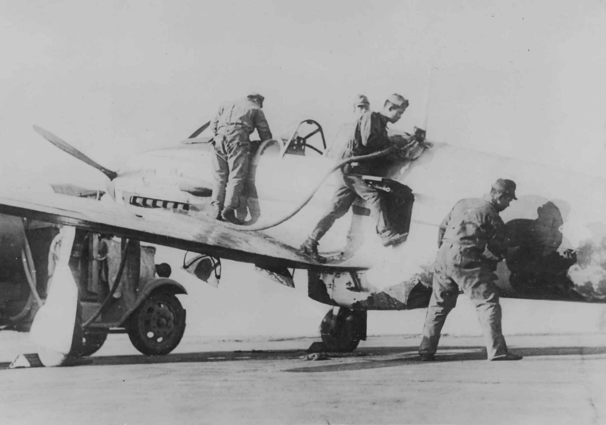
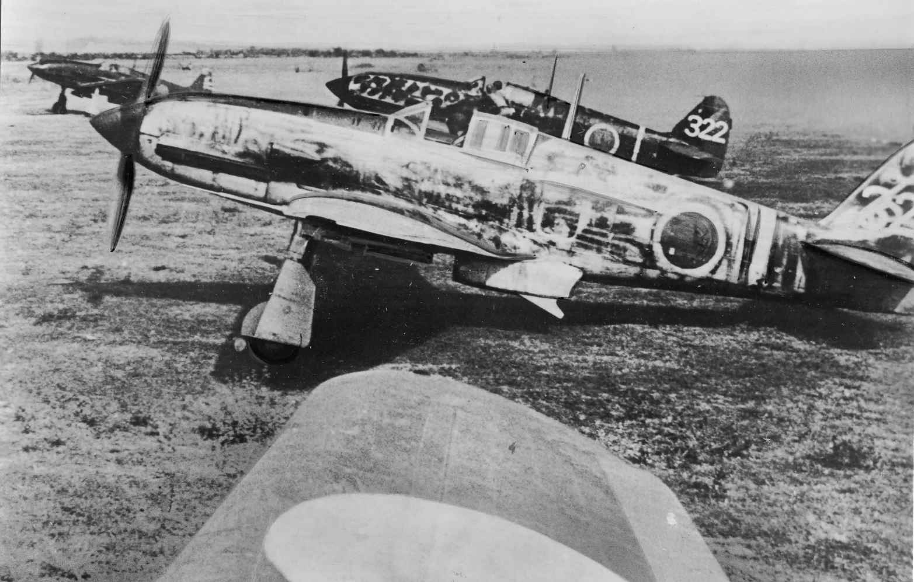

| 「高空の三式戦 飛燕」 ～体当たりＢ２９を撃墜せよ （横組み） eXism Short Magazine | |
| ワクロー3 | |
| (2014) | |
二宮徹司中尉が、整備兵の吉村勇吉上等兵を知ったのは、作戦に使う乗機が四四八号機と決まってからだった。
初日、機の状態を見ておこうと、夕食後に格納庫に行くと、機体を磨いている整備兵がいた。その時は声をかけなかった。ほかの整備兵は一人もいない。おそらくは夕食後の時間に、自分の休養を省略して、ここに来て機体を磨いているのか。感心な整備兵がいるものだと、心にとめてそばを離れた。
二日目、同じ時間帯に格納庫に行くと、同じ兵が、やはり布で四四八号機を丹念に磨いていた。
三式戦闘機は、出撃して戻ってくると、機首から滑油が漏れていることがある。また、滑走路が雨などでぬかるんでいると、着陸の際に跳ね上げるのか、機体下部から尾翼にかけて、粘着性の泥で汚れていることが多い。それらを拭き取るのが作業の一部になっているほどだ。
だが、通常の整備の時間帯に、そのような滑油漏れや泥はねは拭き取っているので、こんな時間に格納庫に来て磨き続ける必要はない。義務で磨いているのではなく、自発的にここに来て磨いているということだ。
油まみれの整備服に身を包んだ顔を遠目から見ると、まだ幼さが残る少年兵だった。
好奇心にかられた二宮中尉は、歩を進めて整備兵に近づいた。
気が付いた彼は、磨くのをやめて敬礼する。
「名は何と言う」
「吉村勇吉であります」
「何歳だ」
「十六歳であります」
「こんな時間に、昨日も磨いていたな」
「申し訳ありません」
「四四八号機以外の機も磨いてるのか」
「いえ‥」
「いえ、じゃわからんぞ」
「四四八号機だけを磨いています。ほかの機は、磨いていません」
「なぜだ」
「整備兵になって、教育隊で初めて見たのが、四四八号機だったからであります」
「見た？整備していたわけじゃないのか」
「整備はしていません。見ていただけであります」
二宮中尉は、これ以後、吉村上等兵に機会を見ては話しかけるようになったのだが、整備の腕については、まるで信用していなかった。吉村上等兵は、整備兵になって半年も経っていないからだ。
三日目の午前中、自分の乗機四四八号機の整備に、吉村勇吉上等兵がついているのを見ると、そばに行き話しかけた。
吉村上等兵は、発動機の覆いを外した状態で、配管の袋ナットを締め付けしている。
「締め付けの加減は、十分に習ってきただろうな」
自分は、整備の機付長でもないのに、つい口を出してしまった。心配でならないという声で吉村上等兵に言葉を重ねる。
「締めすぎるなよ」
「はいっ」
袋ナットを締めすぎると、配管を損傷したり、滑油漏れの原因になりかねない。
空中での重大事故の原因になるからだ。
実のところ、吉村のような少年兵には、整備してほしくない。経験を積んだ古兵に、乗機の整備をしてほしい。それは、二宮中尉ならずとも、空中勤務者に共通した思いだ。
十六歳の少年を志願させて整備兵にするなんて。戦争が始まる前には考えられなかったことだ。彼らは、たった半年の訓練を経て、上等兵になって整備の現場に送り込まれてくる。
通常の召集兵であれば、数年かかる陸軍上等兵に、たった半年やそこらでなれるのである。まだ童顔の少年兵が吉村勇吉・上等兵殿なのである。
二宮中尉は、吉村勇吉が確信を持ってナットを締めているか。それだけを注視していた。古参の整備兵であれば、締め付けの加減が分かるので、ためらいなくナットを締める。
だが、吉村は、最後に締めを二度繰り返した。それを見て、二宮中尉は、即座に厳しい口調で声をかけた。
「どうか」
「はいっ」
「はいっ、ではわからんぞ。吉村。貴様は、最後の締め付けをためらったろう。迷いがあった」
「はいっ、申し訳ありません」
「貴様は、整備兵として、まだまだ未熟だ。俺たちは、未熟な貴様に命をあずけるんだぞ。死ぬ気で整備を学べ」
整備兵・吉村勇吉は、作業をやめて二宮中尉に正対した。
「気合を入れてやる。一歩前に立て。歯を食いしばれ！」
吉村勇吉は、緊張の面持ちで一歩前に立った。二宮中尉は、厳しい顔を作り、殴るしぐさをとる。吉村上等兵は、歯を食いしばって構えた。
二宮中尉は、覚悟を決めて制裁を待っている彼の顔を見ながら思った。
「俺の弟も、こいつと同じ十六歳だ。今ごろ、工場にでも動員されて、同じ目にあっているかも知れない」
二宮中尉は、弟のことを思い描きながら、握り締めた右のこぶしを、整備兵・吉村勇吉の前に突き出した。
「ほら！気合を入れて、これを食え。早く取れ！機付長に見つかる」
吉村勇吉は、二宮中尉の右手に握られた航空増加食の羊羹を素早く受け取った。そして、幼さが残る笑顔を見せて、敬礼した。
二宮中尉は、厳しい表情を装ったまま、吉村の前を足早に立ち去る。
その日の午後、二宮中尉の四四八号機は、出撃準備を終えて列線に引き出された。
本日は、通常攻撃機が十機。特別攻撃機が三機。三機のうちの一機が、二宮中尉の四四八号機だった。
この任務についてから、これまでに二度離陸し、二度とも会敵しないまま戻ってきた。きょうこそは。二宮中尉たち三機は、気合いをこめて出撃命令を待つ。
午後二時十分、ピストで待機する二宮中尉たちのもとに、房総半島沖の監視船からの情報が伝わる。
「敵大型爆撃機四十機編隊が房総半島沖から帝都に侵入を企図しつつあり。小型機の随伴はなし。高度一万メートル」
警急姿勢に移行し、ついで命令が下される。
「飛行第２５５戦隊は、敵大型爆撃機編隊を邀撃せよ」
二宮中尉ら三機は、ほかの十機に先駆けて離陸する。続いて銃弾を満載した通常攻撃機が離陸する。酸素マスクをつけているが、離陸から高度三千メートルまでは、必要がないので、顔が窮屈なだけだ。
二宮中尉は、離陸の時に、視界のはしに、吉村勇吉・上等兵が、帽を振っているのを見た。勇吉が、きょうも帽を振っている。俺に対してか。四四八号機に対してか。どちらのためか、知らないけれど。
四四八号機は順調に加速して、滑走路の中ごろで機首を引き起こして離陸。そのままどんどん上昇する。
高度三千メートルを過ぎて、酸素ボンベが開いた。
さらに上昇を続ける。後続の二機も順調に離陸したようだ。
この高度から見る、冬の関東平野。冬枯れの田園を流れる利根川水系が太陽に反射して、ときおり輝いている。神々しい高空からの眺め。遊覧飛行なら、極楽浄土のような別世界だ。
しかし、きょうの目標は、高度一万メートルという高空にある。四四八号機は、そのまま上昇を続ける。陸軍三式戦闘機「飛燕」にとって、実用上昇限度いっぱいの世界に向かって。
高度六千メートルを過ぎると、冷気が急速に体を締め付ける。上空に冬の太陽が輝く。雲量はゼロ。快晴だ。地上から四四八号機を見ると、小さな黒点にしか見えないはずだ。
敵機は、どこにいるのだろう。二宮中尉は、上昇を続けながら探した。
高度八千メートルを過ぎてから、急に発動機が喘ぎ始める。
愛機は、まるで泥濘に足を取られるような、のろのろとした動きになる。強烈なジェット気流が流れる高高度では、機位を保つのにせいいっぱいだ。
操縦桿を握り、じりじりと上昇を続ける。高度九千メートル過ぎる。ここから、高度一万メートルが、とても遠くに感じる。気が焦ってもなかなか高度計は動いてくれない。酸素が薄い高空で、過給機がない発動機を積んでいる戦闘機としては、このあたりが実際の限界高度だ。
旧式の九九式飛三号受信機は、きょうは雑音しか伝えてこない。新型の四号受信機だと、通話に支障はないと聞いているが、四四八号機は、旧式無線が装備されているので、仕方がない。
関東平野は、はるかに下となり、丹沢から富士山にかけて、無人の山々が広がっている。
その時、視界の先に、敵の超重爆撃機の編隊が入ってくる。情報の通りに、およそ四十機の編隊だ。戦闘機の随伴もない。攻撃のために、敵より上位を占めたいのだが、同高度に並ぶのがやっとの思いだ。
その時、となりを並走していた二番機の高橋軍曹の機体が、高度を失って下降してゆく。気流に流されて機位を失ったようだ。たちまち千メートル以上は降下していった。高橋軍曹が再びこの高度に復帰することは困難だ。残る二機だけで襲撃するしかない。
二宮中尉は、残った三番機の木ノ内曹長機に風防越しに、手で右側を指差す。
右方向を見る。高度一万メートルをものともせず、およそ四十機の超重爆撃機Ｂ２９の編隊。美しい。塗装なしの銀色の胴体が、太陽光を受けて、きらきら輝いている。
相手のＢ２９編隊は、こちらを視認したはずだ。しかし進路を変えない。迎撃の日本機が二機しかいないのでけちらして進むつもりなのか。距離がたちまちのうちに縮まる。
二宮中尉は、敵編隊よりわずかに高位にあることを知り、敵編隊の前方から約四五度の角度で接敵する。双方の速度差が大きいので、攻撃機会は一度しか取れないだろう。
二宮中尉は、敵編隊の上からかぶさるように攻撃態勢を取る。射撃しながら突入するつもりだった。
百式射撃照準器いっぱいにＢ２９の巨体が映る。引き金を押して機首の１２・７ミリ弾を放つ。吸い込まれるようにＢ２９の巨体に命中するが、手ごたえはない。
こちらの射撃へのお返しのように、Ｂ２９の四十機編隊が強烈な防御弾幕で襲い掛かってくる。
風防の外側は、敵が放つ、たけり狂う焼けた銃弾の洪水だ。真っ赤な弾幕をものともせず、直進する三式戦。弾丸を撃ちながら突入する二宮中尉だったが、目標のＢ２９は、たちまち通過してしまい、そのまま巨人機のプロペラ後流に巻き込まれて、機位を失う。
操縦不能になった間に、二宮中尉の機のすぐ横を、怒れる貨物列車のように通過する別のＢ２９の群れ。なんとか乗機を体当りさせようとするが、そう簡単にはいかない。敵の機体が、すぐそこにあるのに、機を向けることができないのだ。
体当りしたい気持ちとは裏腹に、二宮中尉の三式戦は、機体を立て直せないまま高度を落としてゆく。
攻撃は空振りに終わり、そのまま高度も一挙に失ってしまった。敵編隊の行く手を阻むこともできず、最初の射撃も手ごたえがなかった。敵爆撃機の爆撃を阻むことはできなかったということだ。
再び攻撃位置を占めることも無理だった。
高度七千メートル付近で、ようやく機体を制御することができた。
周囲には、通常攻撃の味方戦闘機が漂っていたが、彼らもまた、攻撃高度にさえ達することができなかったようだ。
攻撃に失敗した今、二宮中尉たちは、飛行基地に戻るしかない。
取り逃がしたＢ２９の編隊は、東京府下西部の飛行機工場群を狙って、高高度精密爆撃を行ったらしい。その方面から断続的に爆発音が遠く聞こえる。
無念の気持ちを抱きながら、高度六千メートルまで降下すると、今度は、発動機付近から、滑油がにじみはじめる。機首の隙間から、滑油が最初はジワジワと、次第に機首からシミを広げてゆく。吉村上等兵が、ピカピカに輝いていた胴体が、みるみるうちに汚れて行った。
最初は、にじみ出る感じだった滑油は、やがて噴水のように噴射して風防にかかりはじめる。風防が油で汚れて、視界がきかなくなってきた。
滑油汚れの隙間から、基地と滑走路を視認しつつ、やっとの思いで、滑走路にすべりこむ。視界が狭いので、一歩誤ると何かに激突してしまいそうで、危険きわまりない。
滑走路の端で着陸すると、風防を開けて視界を開き、機を地上走行させて、滑走路脇に動かして停める。すかさず機付長たち整備兵の一行が駆け寄ってきた。
着陸してよく見ると、四四八号機の右翼には敵弾が命中して先端がなくなっていた。残った羽根も、何箇所も金属がめくれあがっている。こちらからは、なにもできなかったのに、敵からは手ひどくやられていた。悔しかった。すぐそこに敵はいたのに、体当たりできなかった。
機体を停めたところは、基地の戦隊本部の前だった。
航空地区司令官と、中佐の階級章をつけた第三七飛行団の参謀が出てきて、二宮中尉の四四八号機までやって来る。ねぎらいの言葉でもあるのだろうか。二宮中尉は、一瞬そんなことを思った。
だが、参謀中佐がわめいた言葉は、ねぎらいではなく罵声だった。
「ここからずっと見ておったぞ。貴様は、なぜ体当りをせんのだ！やればできたはずだ！」
二宮中尉は、怒りを殺して罵声を浴びていた。声には出さない思いを胸に。
「おまえがやってみろってんだ。高度一万メートルを満足に飛べる飛行機を俺たちに与えて見ろ！」
攻撃に失敗した悔しさに加えて、参謀中佐の罵声は、二宮中尉の心に、いっそうの内攻した怒りを滾らせる。参謀はなおも罵声を続けた。
「貴様は、任務を果たせ！何のための特別攻撃編成なのだ」
二宮中尉は、無表情で、不動の姿勢でいた。
「地上で見物していただけのくせに、偉そうなことを言いやがって！」
航空地区司令官は、無言だったが、その目を見ていれば、参謀中佐と同じ意見だと認めることができる。
参謀中佐は、言うだけ言うと、建物に去ってゆく、上官二人を睨み続けて見送った。俺は、口先だけの、お前らとは違う。体を張って死ぬつもりだ。必ずやってみせる。地上にいて見物して、文句だけを言うお前たちとは違うんだ。
四四八号機の機付の整備兵が集まって整備している。
敵の銃弾の弾痕を修復するもの、ハ四〇発動機を点検するもの。搭乗席に座り、敵弾で破損した部分を点検するもの。四四八号機の周りに整備兵たちが集まり、活況を呈していた。
吉村勇吉上等兵は、前部と風防に飛び散った滑油を、布で器用に拭き取っていた。まるで自分の体のように大切にふき取っているその姿を見ていると、二宮中尉は、どこか申し訳なくなる。
四四八号機は、空対空特別攻撃、つまり体当たりが任務の機体だからだ。
たんねんに油をぬぐっている吉村上等兵を、ピストからじっと見つめながら、二宮中尉は、愛機に向かった。
操縦席に座り込んで計器の点検をしていたのは機付長だった。二宮中尉は、自分の背中を指差しながら、声をかけた。
「機付長。それを外してくれないか」
機付長は、心得たように座席背後の防弾鋼板に手をかけて、二宮中尉を見る。
「そうだ。それだ。外してくれ」
油をぬぐっていた吉村上等兵は、なぜ？という訴えるような表情で二宮中尉を見る。防弾鋼板がないと、背後から敵弾を受けるとモロに体に当たる。初期の一式戦の空中勤務者みたいに、流れ弾にあたって機上戦死するのだ。
二宮中尉は、かまわず、言葉を続ける。
「機銃も外してくれ」
「両翼ですか」
「両翼だ」
「機首の１２・７ミリは残しましょう」
機付長は、武装なしではあんまりだと思ったのだろう。一方的に宣言するように、そう言った。二宮中尉は、同意したが、自分の提案も行った。
「弾は三十発でいい」
「...少ないですよ...」
機付長は、ためらったが、二宮中尉は重ねて言った。
「撃ちながら突っ込むんだ、長く撃つ暇はない。三十発でいい」
二宮中尉は、さらに伝える。
「燃料タンクの防弾ゴムも外してくれ」
防弾ゴムがないと、敵弾を受けて燃料が漏れて、すぐに引火する。だが軽量化しなければ、高度一万メートルまで、時間だけがかかる。接敵しないことには、攻撃もできない。機体を軽量化して、一秒でも早く、一万メートルに到達するのだ。
二宮中尉は、思い出したように最後に付け加えた。
「酸素ボンベも一つでいい」
吉村上等兵が、自分の持ち場から、何か言いたそうに二宮中尉をじっと見た。そんな吉村を封じるように、二宮中尉は、吉村上等兵に視線を向けて言った。
「吉村。頼むぞ」
吉村上等兵は、敬礼で答えた。
「はいっ、中尉殿」
俺が心配なのか。四四八号機の運命が悲しいのか。依然としてよく分からなかった。吉村上等兵が、四四八号機に特別の思い入れを抱いているのは、間違いが無い。四四八号機は、吉村上等兵にとって、教育隊で出会った憧れの機体だったと聞いているからだ。

二宮中尉は、教育隊で吉村の教官役をしていた古参の整備兵から、こんな話を聞いていていた。
「あいつ、浜松の教育隊で、あてがわれた九七戦に目もくれず、四四八号機に魂を奪われたんです。たまたま着陸してきたキの６１が、こっちやってきてね。吉村の前を通り過ぎたんです」
吉村は、九七戦の整備手順の教育を受けていたのに、四四八号機を見て、作業をやめてボウッと見てしまった。
「ボサーッとするな！。俺は、往復ビンタくれてやりましたけど、あの眼は、もう、一目ぼれした目でした」
古参整備兵は苦笑いしながら、話を続けた。
「あいつ、女に惚れるみたいに、キの６１に一目ぼれしやがった。俺は、そう思ったもんですから、次に四四八号機がそばに来たときに、連れて行って、おい、吉村、触っていいぞって、言ってやったんです」
いっしょに聞いていた整備兵たちは、この挿話をみんな知っていたのだろう。話を聞いて笑い声が起きた。
「吉村、ほんとうに女を初めて触るみたいにして、四四八号機に触ったんです」
「吉村にとって、憧れの初恋の女ってやつか」
「やつにとっては、そんなところですね。ここで偶然にも再会して、初恋が本物になっちまったんです。やつ、他の機体には、決められたことしかしないのに、自分の休息時間にも、四四八号機にいって、磨き上げてるんですよ」
二五五戦隊の機体は、各機思い思いに迷彩塗装をしているのだが、二宮中尉の意思もあって、四四八号機は、製造時の銀色の地肌を多く残し、最小限の塗装にしてある。機首部分から胴体の大部分も、むき出しの金属のままだ。
原型を損なっていないので、吉村が丁寧に磨げば磨くだけ、機体が高空にあがると、太陽を反射して、キラキラと美しく輝く。
「それで、いつもピカピカなのか」
「女を知らないくせに、四四八号機にうつつを抜かしてるんです」
「やつは、これが体当たり機だってこと知ってるんだろうな」
「知ってます」
「別れを知ってるから、なおのこと、いとおしいのでしょう」
整備兵たちは大笑いした。
二宮中尉は夕食後、四四八号機を収容している掩体壕に行くと、そこには吉村上等兵がいて、いつものように布を使って、機体を磨き上げていた。
二宮中尉は、あきれたように見て、声をかけた。
「吉村。そのまま聞け！」
吉村上等兵は、作業をやめて敬礼しようとする。
「敬礼なんか、いいよ。それより、お前に聞きたいことがある」
「...」
「俺は、明日こそ任務をやり遂げる。Ｂ公が来たら、こいつで体当たりだ。お前には申し訳ないが、こいつを連れてゆく。貴様、それでいいか」
吉村上等兵は、答えようがなかった。軍隊には、上官に対して、だめだ、と答える選択肢はないからだ。
「今の質問には答えなくてよい。だが、今後の参考のために聞きたい。四四八号機が見事体当たりしたら、貴様は喜んでくれるな」
吉村上等兵は、答える。
「吉村は、四四八号機が見事体当たりしたら、喜びます」
「貴様、どうして整備兵になったのか」
吉村上等兵は黙った。
「答えよ。吉村。なぜ整備兵になった」
吉村上等兵は、答える。
「整備兵になるよう決まったからであります」
「本当は、空中勤務者になりたかったんだろう。そのつもりで、召集令状を待たずに、特別幹部候補生に志願したのだろう」
吉村上等兵には、これも答えられない質問だった。自分の意思の開陳など、軍隊で許されることでないことくらい、半年間の教育隊生活で叩きこまれている。まして直属の上官でもない上級者の前で、真情を吐露するわけにもいかなかった。
「吉村上等兵。本当のことは、答えられんことくらい承知しておる。俺は、貴様のことなど何でもお見通しだ」
「はいっ！」
「あす、お前も一緒に連れて行ってやろう。だが、貴様を乗せるわけには行かない。四四八号機にお前の分身を乗せてやる。何かないか。重いものはだめだぞ」
吉村上等兵は、迷わず、お守りを取り出した。
「それでいいか」
「はいっ！」
「では、預かる。Ｂ公に体当たりしたら、俺は戻って来れないかも知れない。その時は勘弁しろ。このお守りも道連れだ。いいな」
「はいっ」
「俺は、貴様の分まで、この四四八号機とともに突っ込む。見ておけよ！」
「はいっ！」
二宮中尉は、吉村上等兵からお守りを預かると、ピストに戻って行った。
「房総半島沖から敵大型機六十機編隊が侵入を企図せんとす」の情報とともに、この日も出撃命令が出る。
基地から十四機が発進する。二宮中尉の四四八号機は、四番目に離陸した。
戦隊は、稼動全機による全力出撃だったが、高度六千メートルに達するまでに、発動機不調などで六機が脱落した。残りは八機になってしまった。
幸いなことに、四四八号機は、前日からの懸命の整備のためか、川崎製ハ四〇液冷倒立十二気筒の発動機は快調だ。
武装を減らし、軽量化に努めた二宮中尉の四四八号機だけが、突出して上昇を続けてゆく。高度六千メートルを過ぎると、中隊のほかの機体を置き去りにして、単独で上昇を続けた。
それでも、高度一万メートルにたどりつくのは、やっとの思いだ。今日は雲が広がっていて、地上はほとんど見えない。僚機をはるかに引き離してしまった。
酸素ボンベから酸素が送られてくるので、呼吸は問題ない。かさばる電熱服を着ていないので動きは楽だが、氷点下三十度は、とにかく寒い。防寒服のわずかな隙間から冷気が忍び込んでくる。早く戦闘になればいいのに。
高度八千メートル付近。いつもなら、試射するところだが、搭載した弾丸が三十発しかないので、試射を省略する。距離を詰め、機首の十二・七ミリ機銃を撃ちながら突入するつもりだった。
高度九千メートルを通過。ここから動きが極端に鈍くなるが、軽量化したためだろう。前日の状況よりも、いくらかましだった。じりじりと高度一万メートルに到達する。
やがてＢ２９の大群が視界に入る。僚機は、まったく視界に入って来ない。
遠くに見えたＢ２９の大編隊は、ゆるやかに進路を変え始めた。巨人機の大編隊が進路を変更することは容易ではないはずだ。空中衝突の危険が大きいからだ。それを簡単にやってのけている。
優れた空中無線で連絡を取り合いながらやってこそ、初めてできる芸当だ。Ｂ２９編隊は、ゆるやかに進路を変えてしまった。
遅れてきた僚機の編隊が、本機よりもかなり遠くにあがってきた。
基地や僚機に、九九式飛三号送信機で通信を試みるが、何の応答もない。
やがて、進路を変えてきたＢ２９の大群が視界に入った。友軍機は、その向こう側の見当違いの方角に浮上している。あの位置では、攻撃につくのは困難だと思う。友軍機の大部分は、攻撃が空振りすると見ていい。
いまＢ２９編隊が進路を変えてきた方向には、二宮中尉の機だけがいる。機を左にゆるく旋回させて、昨日と同じ反航戦を避ける。お互い高速ですれちがう反航戦では、攻撃機会が一度しかないからだ。

二宮中尉機は、敵編隊を浅い角度で追いかけることになり、Ｂ２９編隊の射手たちが、猛烈に撃ってくる。
巨人機の列に迫ろうとするが、敵の一、二、三番機は、傍らを通過してしまった。四番機に追いすがるように接近する。高度がやや下がり、敵機の下腹部から体当たりを狙える位置につけた。敵の下部銃座から炎の束がこっちに向かってくる。
体当たりしようと、機首を上向きにするが、四番機は、ぎりぎりですり抜けて行った。
四番機への体当たりが失敗し、上に抜けると、さらに後続のＢ２９が続々と来る。敵が上下二層になっていたことが、幸運だった。敵機は、同志撃ちを避けるため、ほかの編隊からの射撃が途絶えた。
目標と一対一の勝負だ。
百式照準器から巨人機の全体がはみ出るほどになった瞬間、二宮中尉は、機首の十二・七ミリ機銃を射撃しながら突っ込む。速度差があまりないので、四四八号機のプロペラが、巨人機の腹部をえぐりとってゆく。
下部銃座をはぎ取り、なお推力が残っているので、そのまま右翼内側のエンジンに体当りする。双方の速度差が少ないので衝撃はそれほどない。バリバリバリバリー。鈍い破砕音が断続的に響き、四四八号機の機首が破損するのと、Ｂ２９の右翼が砕け散るのと、ほぼ同時だった。巨人機は、緩やかに失速しながら錐もみに入る。
最初は、敵機と絡み合うように落下を始めた四四八号機は、途中から単独で墜落してゆく。両翼の大部分が残っていたので、錐もみや激しい回転、垂直落下ではなく、緩やかな落下だったことが幸いして、失神するようなことがなかった。
しかし、風防をずらして脱出しようとするが、破損した風防を開くことができなかった。手順通り、風防飛散装置のレバーを引いたが、なんの反応もない。体当たりによって、風防を爆砕する仕掛けも破損してしまったようだ。これまでか。あきらめた瞬間、落下の風圧によるものだろうか、風防が砕け散って、急に視界が開けた。
天は、まだ俺に生きて戦えと伝えている。二宮中尉は、そう思って操縦席から脱出した。
この瞬間、吉村上等兵のことは、頭の片隅にもなかった。
体当たりしたＢ２９は、右翼を失って、大きく回転しながら、まっさかさまに墜落してゆく。乗員は誰も脱出できないだろう。空対空体当たり攻撃で、一機を撃墜した。確認しながら、落下傘を開いた。
体を確かめるが、特に負傷もしていない。飛行服の一部が破れたせいか、強烈な冷気が体を襲ってくる。それも、戦果をかみ締めると、心地よい寒さだ。
雲量が多かったので、地上から自分の体当たり攻撃が見えていたかどうかは分からない。そこまで思ったとき、地上で戦果を待っている整備兵たちを思い出した。その流れで、吉村上等兵を思い浮かべた。
吉村上等兵が、今朝まで愛着を持って整備していた四四八号機は、さっきの戦いで大空に砕け散った。彼は、四四八号機との別れを受け入れないとならないのだが、彼の心の内は、どんなだろう。
基地に戻ったら、やつに航空増加食のいくつかを贈って慰めてやろう。そんなことを考えながら、地上に着地する。冬枯れの畑地に、落下傘降下の訓練でも、ここまでうまく着地できないだろう。それほど理想的な着地ができた。
敵の支配地域ではなく、内地なので、そうする必要はないのだが、訓練通りに落下傘をたたみ、基地に向けて徒歩で戻る。たまたま落下した地点は、基地から徒歩で四十分ほどの至近距離だった。敵機を追ううちに千葉県や埼玉県まで行ってしまうことがあるが、運が良かったとしか言いようがない。
午後三時過ぎに基地の門をくぐる。徒歩で戻ってきた二宮中尉に対して、衛兵が敬礼した。
高度一万メートルの世界から、敵機に体当たりして、生きて戻ってきた。
基地の門をくぐると、あらためて実感した。よく戻れたものだ。地上を歩いていることが、自分でも信じられない。
司令部に出頭して戦果を報告する。
「高度一万メートル付近で、敵Ｂ２９に下方後部より接近、乗機を突入せしめ、右翼に体当たりを敢行。敵機は右翼を失い、錐もみにて墜落せり」
「ご苦労。敵機の墜落は地上から見届けた。神奈川県南部方向に墜落した模様である」
敬礼して退出するとき、司令部の窓越しに、滑走路が見えた。路面の数箇所に、爆撃を受けたような巨大な穴が開いているのが見えた。離陸前には無かった大穴だった。
ついでピストに行き、戦隊の戦果を確認する。
十四機が離陸。発動機故障などで六機が脱落して八機が攻撃に参加。体当たり攻撃で一機撃墜、通常攻撃で一機撃墜。四機撃破という。通常攻撃機の未帰還は二機だった。
二宮中尉は、次いで格納庫を訪ねた。帰還した機体の補修のため、整備兵たちがそこにいるはずだ。
「吉村に四四八号機を失った侘びと、戦果のお礼をいわねばならない」
吉村は、どんな顔をしているだろうか。四四八号機がなくなった悲しみを押し殺して、戦果を祝福してくれるに違いない。
軍粮精（キャラメル）を二箱手にして、格納庫に向かう。途中、左ひざのあたりに違和感を覚えたが、一刻も早く吉村の顔を見たい。構わず歩き続けた。
基地も敵機の爆撃を受けたのか、滑走路には大きな穴が開いている。格納庫のひとつは、完全に爆砕されていた。
格納庫の中は、整備を必要とする機体が何機も運び込まれていて、騒然としていた。無事に戻った機でも、Ｂ２９の防御放火を浴びて無傷ではいられない。大小さまざまな損傷を蒙っていた。
格納庫に入ってきた二宮中尉に、吉村上等兵の上官が最初に気がついて敬礼した。
「撃墜、おめでとうございます」
「‥お前たちのおかげだ。礼を言う」
二宮中尉は、答えながら吉村の姿を探した。
「吉村上等兵はどこだ！」
よほどの大声だったのだろう。周囲で工作していた整備兵たちの動作がすべて止まった。ついで重い沈黙が支配する。
「...どうした？」
「吉村上等兵は、戦死しました」
「戦死？なぜだ」
「２５５戦隊が離陸した直後、低空から敵機がやってきて銃爆撃を加えてゆきました。吉村上等兵は、滑走路から退避中に爆撃に遭い、戦死しました」
「...そうか」
二宮中尉は、無表情となって、格納庫を立ち去った。
戦死者が出ると、本部前が遺体安置所となって戦死者の棺が置かれる。そこに行くと、棺が三つ並んでいた。
二宮中尉は、立哨している兵士に問う。
「吉村上等兵は、どれか」
「吉村上等兵殿の棺は、中尉殿から見て一番右側であります」
二宮中尉は、棺を開けて吉村上等兵の亡骸を見た。下肢に夥しい包帯が巻かれ、血で汚れた布で覆われていた。おそらく原形がないほど遺体は損傷しているのかもしれなかった。だが、顔や上半身は、ほぼ原形のままだった。四四八号機を丁寧に丁寧に磨いていた指は、今は固く結ばれ、目は片方だけ開いていた。
二宮中尉は、持ってきた軍粮精（キャラメル）二箱を胸の上に置き、小声でつぶやいた。
「なぜだ」
決死の体当たり攻撃が任務だった自分は生還し、戦闘する必要が無い地上にいた吉村が戦死している。
合掌しようとした時、二宮中尉は、自分の左ひざのあたりに手をやって、飛行服に破れた穴があること見つけた。穴の中に、何かが食い込んでいる。指を入れて探ると、中から取り出したものを見た。それは、四四八号機のものに違いない。三式戦闘機「飛燕」に装備されている百式照準器のガラス片だった。
Ｂ２９に突入した衝撃で、照準器が砕け散り、照準器のガラス片が、飛行服に食い込んだのだろう。二宮中尉の肉体を損なうことなく、飛行服にめり込んでいたのだ。
二宮中尉は、四四八号機の百式照準器の破片を、吉村上等兵の顔の横にそっと置いた。
弟と同じ年齢で。十六歳で戦死した少年上等兵‥。隣に置いた四四八号機の照準機の破片。二宮中尉は、じっと遺体を見詰め、やがて瞑目すると、次の瞬間、直立不動の姿勢を取って、長い敬礼をするのだった。
少年時代、初めて作ったプラモデルは、Ｂ２９に襲い掛かる姿が箱絵になっている陸軍二式複座戦闘機「屠龍」でした。次に作ったのが、陸軍三式戦闘機「飛燕」です。「屠龍」も「飛燕」も、同じ川崎航空機の土井武夫技師の設計による機体です。
子供のころは、設計技師の名前は気にしていませんでしたので、偶然、選んでいたと思います。有名な海軍の零式艦上戦闘機（ゼロ戦）でもなく、紫電改でもなかった点が、我ながら知らないうちに土井技師の形に魅了されていたと、運命的なものを感じます。新刊では手に入りませんが、土井武夫「飛行機設計５０年の回想」（酣燈社 、１９８９年）は、技術者が描いた航空史という点で、読み応えある一冊でした。
基礎工業力に劣るわが国が生み出した液冷発動機ハ４０を使った機体でしたが、発動機の保守と整備に難があり、量産の初期段階で、ニューギニアなど遠隔地の南方戦線に配備したために、稼働率が低いことが難点になったとも言われています。
国民の記憶に残る「飛燕」と言えば、帝都防空を任務にしていた飛行２４４戦隊の活躍を報じた新聞報道を通じてでしょう。本土を無差別爆撃するＢ２９に対抗して、この本で描いたような「飛燕」による「空対空体当たり攻撃」を任務とする部隊も編成されました。
この体当たり攻撃は、艦船を目標にした必死攻撃の特別攻撃隊とは異なり、落下傘降下して生還する可能性もあったのですが、それでも多くの犠牲が出た決死攻撃でした。自由にならない高空での体当たりは、非常に困難だったとの証言が残っています。
前作「震電」攻撃隊 ～原爆搭載機ヲ撃墜セヨに続いて、株式会社エクスイズムの徳江一義社長には、遅筆の私を粘り強く励ましていただき、感謝しています。望外にも二冊目を形にできたのは、徳江さんが待っていただいたからです。また今回も、表紙デザインを、株式会社ブックアレーの代表取締役、原田晶文さんに手掛けていただきました。とても気に入っています。
最後に、この本は、陸軍三式戦闘機「飛燕」を駆って、本土防空の任に散った同胞たちに捧げたいと思います。